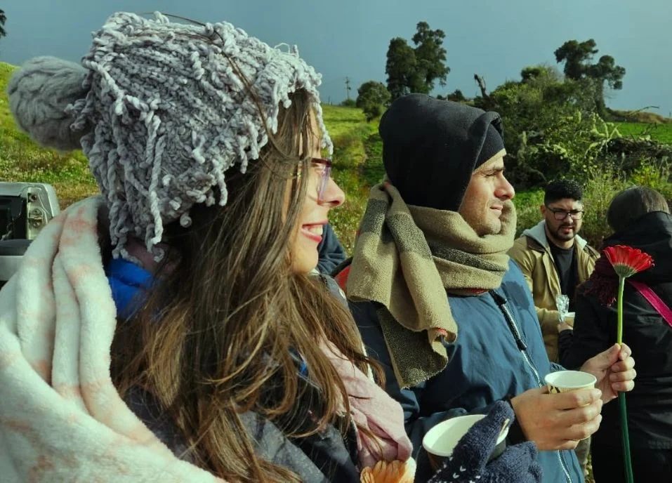

Filosofía
Filosofía Práctica
Filosofía para Jóvenes

Cultivá tus talentos, ampliá tus conocimientos y formá parte de una comunidad que aprende, crea y transforma.
¿Por dónde querés empezar?

Centro Cultural Victoria nace de la Organización Internacional Nueva Acrópolis, una escuela de filosofía que promueve la cultura y practica el voluntariado para mejorar el mundo a partir del crecimiento individual y colectivo. Aquí se hace comunidad para educar, cultivar y manifestar lo mejor de cada ser.
Descubrí las disciplinas que ofrecemos. Elegí la que más te inspire y conocé más sobre nuestros cursos.
Filosofía Práctica
Filosofía para Jóvenes
Danza Folclórica
Experimentos Científicos
Teclado
Ballet
Danza Contemporánea
Guitarra Popular
Violín
Teclado
La filosofía no es solo teoría: es una herramienta para la vida. A través de nuestras escuelas, aplicamos principios filosóficos a la vida cotidiana, ayudándote a tomar mejores decisiones, entender tus emociones y encontrar propósito en lo que hacés.
Actividades, talleres, eventos y experiencias que forman parte de nuestra comunidad.
Esto es lo que dicen quienes forman parte del Centro Cultural Victoria.
Sumate a nuestra comunidad y enterate primero de talleres, eventos y nuevas propuestas.

Escaneá para ver nuestro catálogo


{kind=link}
{kind=link}
{kind=link}
{kind=link}
{kind=link}